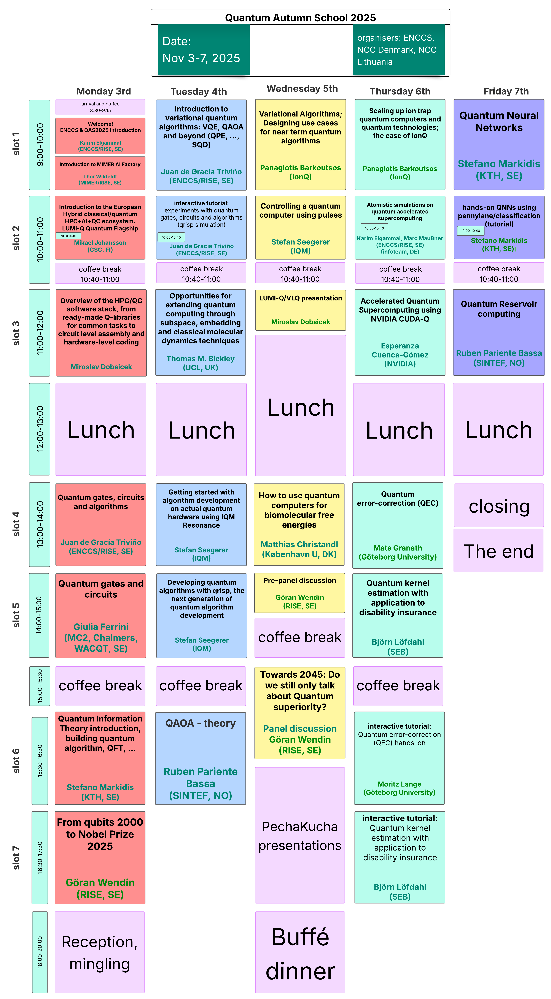

Quantum Autumn School 2025
Welcome to QAS2025!
Join us for an intensive week of quantum computing education, featuring hands-on tutorials, expert lectures, and European quantum hardware.
üìÖ November 3-7, 2025 | üìç Stockholm, Sweden (Address details shared in email communications)
üéØ Day 0: Pre-Event Information - Start Here!

About the school
The Quantum Autumn School 2025 (QAS2025) brings together researchers, students, and industry professionals to explore cutting-edge developments in quantum computing. This 5-day event offers a unique combination of theoretical foundations and practical experience emphasising the integration with High Performance Computing, featuring expert-led sessions that cover a range of topics from theoretical foundations to practical applications. Expect a blend of lectures, hands-on exercises, and networking opportunities, including the chance to interact with stakeholders involved with the EuroHPC JU quantum computers. It will provide a valuable opportunity to explore the latest advancements in quantum computing, where you’ll learn about up-to-date topics and European quantum efforts, especially in light of the eight EuroHPC JU quantum computers announcements, and get hands-on experience.
Nordic Quantum Autumn School 2025 - Schedule
- Day 0: before you arrive
- PechaKucha Evening
- Qrisp Starter Tutorial
- Day 1 - Monday, November 3rd
- Arrival and coffee
- Welcome & introduction to QAS2025
- Introduction to MIMER AI Factory
- The European hybrid HPC+AI+QC ecosystem
- Coffee break
- SW Stack for NISQ devices
- Lunch
- Introduction to Quantum Computing - Qubits, gates and circuits
- Introduction to Quantum Algorithms
- Coffee break
- Quantum Algorithms: A Top-Down Approach
- From qubits 2000 to Nobel Prize 2025
- Reception & mingling
- Day 2 - Tuesday, November 4th
- Hamiltonian Simulation and Estimation
- interactive tutorial: experiments with quantum gates, circuits and algorithms
- Coffee break
- Opportunities for extending quantum computing through subspace, embedding and classical molecular dynamics techniques
- Lunch
- Getting started with algorithm development on actual quantum hardware using IQM Resonance
- Developing quantum algorithms with qrisp—the next generation of quantum algorithm development
- Coffee break
- QAOA - Theory
- Day 3 - Wednesday, November 5th
- Variational Algorithms; Designing use cases for near term quantum algorithms
- Excursion session: Controlling a quantum computer using pulses
- Coffee break
- LUMI-Q/VLQ presentation
- Longer Lunch
- How to use quantum computers for biomolecular free energies
- Pre-panel discussion
- Coffee break
- Towards 2045: Do we still only talk about Quantum superiority?
- PechaKucha presentations
- Buffé dinner
- Day 4 - Thursday, November 6th
- Scaling up ion trap quantum computers and quantum technologies; the case of IonQ
- Atomistic simulations on quantum accelerated supercomputing
- Coffee break
- Accelerated quantum supercomputing using NVIDIA CUDA-Q
- Lunch
- Quantum error-correction (QEC)
- Quantum kernel estimation with application to disability insurance
- Coffee break
- Interactive tutorial: Quantum error-correction (QEC) hands-on
- interactive tutorial: Quantum kernel estimation with application to disability insurance
- Day 5 - Friday, November 7th
- Related resources
What you will learn
QAS2025 will cover a broad range of topics that will give you a solid foundation in theoretical concepts and the practical know-how to get started with quantum computing in your domain. Starting from introductory lectures and basic tutorials at the first days of the school and building up to intermediate and advanced topics towards the end.
Introduction to quantum algorithms: Get a quick introduction on quantum computing, quantum information theory and learn how to develop a quantum algorithm. Understand the logic behind, and be able to programmatically create, quantum gates, circuits and algorithms such as QAOA and VQE with their different variations
Hands-on experience with a quantum computer: run computational workloads on real quantum hardware, with potential access to EuroHPC JU quantum device like LUMI-Q
European quantum initiatives: get an understanding and overview of the quantum computing ecosystem in Europe and globally, including key European quantum initiatives and talks by European hardware providers: IQM and Pasqal
Use cases: familiarise yourself with use cases in key domains such as optimisation, quantum chemistry and quantum finance. Learn about the exciting intersection between quantum computing and neural networks with overview on quantum reservoir computing
Quantum packages: use common quantum SDKs as Qiskit, Pennylane, learn about the European quantum algorithm development package Qrisp and how to accelerate quantum algorithms using QUDA-Q
Error correction: understand quantum error correction and the difference with quantum error mitigation
HPC & QC workflows: understand how to run hybrid HPC-QC workflows and accelerate quantum algorithms on GPUs.
Partners & organizers
This school is organized by EuroCC competence centres of Sweden ENCCS in collaboration with EuroCC Denmark and EuroCC Lithuania. And supported by WACQT, a national research programme, coordinated from Chalmers, that aims to take Swedish research and industry to the forefront of quantum technology.

Registration & logistics
Important
üìã Register Now
Capacity: Limited to ensure quality interaction
Format: In-person event in Stockholm with zoom link (to be distributed)
Venue
The Quantum Autumn School 2025 will be held in Stockholm, Sweden. Detailed address and directions have been shared via email with registered participants.
Accommodation
There are multiple hotels in the vicinity. Below you can find some hotels in order of proximity:
For more hotel options, visit the event page.
Public transport
Download the public transport app to purchase tickets:
Ticket Options:
Single journey ticket
24-hour ticket
72-hour ticket
You can also use your regular credit card by scanning it on the metro and all buses. More information about contactless payments.
From Arlanda Airport:
Take a taxi
Arlanda Express - fast train (20 minutes to T-Centralen)
Flygbussarna - airport bus (approximately 45 minutes to T-Centralen)
About ENCCS

The EuroHPC Centre of Excellence in Computing Applications (ENCCS) develops and optimizes computational applications for current and upcoming exascale systems. We provide training, support, and expertise in high-performance computing and emerging technologies like quantum computing.
Let’s stay connected
Join our community and stay updated!
Stay in the loop with ENCCS for updates, training opportunities, and news about connecting HPC, AI, and quantum computing!
üåê Visit our website:
ENCCS Website - HPC services, on-boarding, training courses, webinars, tutorials, blog posts, and upcoming events
üìß Subscribe to our newsletter:
ENCCS Newsletter - Get monthly updates delivered to your inbox
üí¨ Follow us on social media:
LinkedIn - Latest news, events, and professional updates
YouTube - Tutorials, webinars, and educational content
Stay connected with the European quantum computing community!
The lesson file structure and browsing layout is inspired by and derived from work by CodeRefinery licensed under the MIT license.